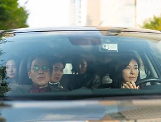

매거진 삼삼오오 · 프리뷰
비밀일 수밖에
진실의 무게

진실의 무게
<비밀일 수밖에>에는 김대환 감독의 전작에서 등장했던 것들이 다시금 출현한다. 오랜만의 가족과의 만남(<철원기행>)과 결혼을 앞둔 사회초년생 커플(<초행>). 이러한 기시감은 비단 김대환 감독의 연출작에서만 비롯되는 것은 아니다. 제작으로 참여한 <춘천, 춘천>에서의 춘천이라는 공간, <겨울밤에>의 숲에서의 몽환적인 조명, 덧붙여 윤색으로 참여한 <기생충>의 조형성까지. 이렇듯 김대환 감독은 여러 영화에 파편적으로 흩어져 있던 요소들을 <비밀일 수밖에>에서 혼합하려 한다.
그러나 그렇게 모인 요소들은 융화되지 못한 채 부유한다. 여러 가지 이유가 있지만 가장 결정적인 원인은 ‘비밀’이다. 언뜻 무탈해 보이는 관계들이 지속되기 위해 <비밀일 수밖에>의 인물들은 각자의 비밀을 숨겨야만 한다. 영화 속 부모와 자식은 서로가 서로를 이해하지 못하고, 그 갈등이 죽음으로까지 이어지자 이내 진실을 숨긴다. 진우(류경수)와 제니(스테파니 리)는 결혼한다는 사실을 숨기고 정하(장영남)의 집에 찾아오고, 정하는 아들인 진우에게 동성 연인인 지선(옥지영)과의 관계를 숨긴다. 캐나다에서 막 도착한 문철(박지일)과 하영(박지아) 역시 어딘가 낌새가 이상하다. 딸인 제니를 보러 왔다지만 무언가 다른 꿍꿍이가 있는 것처럼 보인다.
어찌 됐든 며칠간 함께 지내는 이상, 비밀을 완벽하게 감추기란 어렵기 마련이다. 시간이 지나면서 단서들은 인지되지도 못하는 사이 새어 나온다. 어설프게 발화된 비밀에서 폭소가 터져 나오지만, 때로는 섬뜩해지기도 한다. 이미 비밀을 발설한 대가로 죽음을 겪은 이들이 다시 솔직해질 수 있을까. <비밀일 수밖에>는 진실의 무게에 관한 영화이다.
-오오극장 관객프로그래머 류승원